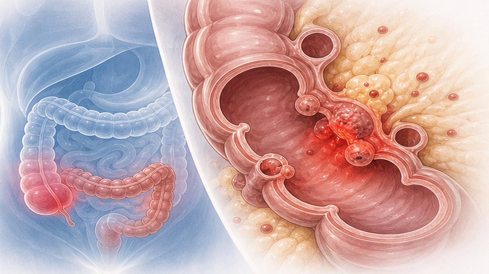
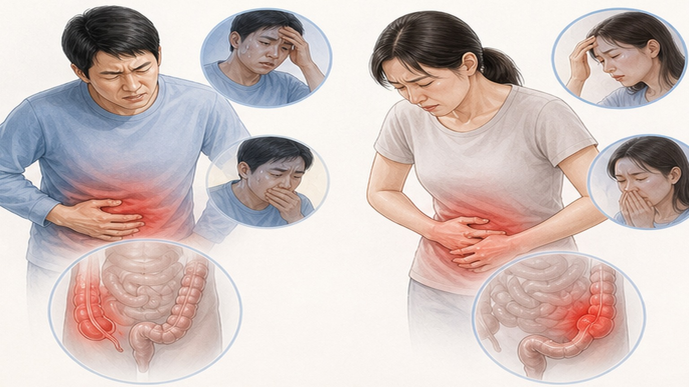
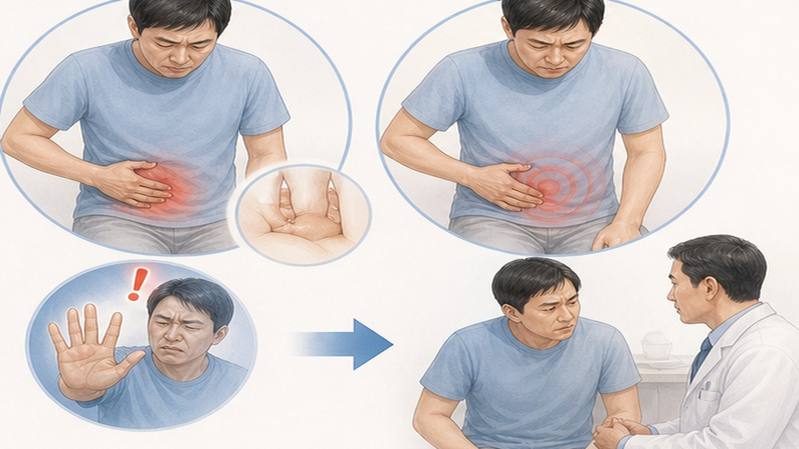
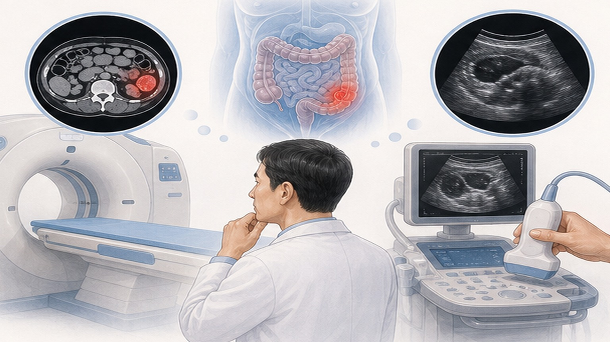

맹장염과 게실염은 시간 싸움입니다 — 일찍 알아차리면 합병증을 막을 수 있습니다

맹장 끝에 달린 작은 관(충수)이 막히고 염증이 생겨 부풀어 오르는 병입니다
대장 벽의 약한 곳이 주머니처럼 튀어나온 것이 ‘게실’입니다

증상은 비슷해 보여도 아픈 곳과 많이 생기는 나이가 다릅니다
한두 가지라도 해당되면 진료를 미루지 마세요
집에서 반복해 누르며 확인하지 말고, 진료실에서 아래 순서로 확인합니다

진찰·피검사와 함께 영상 검사로 확인합니다
환자 상황(나이·임신·증상 정도)에 따라 고릅니다
| 복부 CT | 복부 초음파 | |
|---|---|---|
| 장점 | 가장 객관적이고 정확합니다. 터짐·고름주머니 확인에 좋습니다 | 방사선이 없어 임신부·어린이·반복 검사에 안전합니다 |
| 단점 | 방사선에 노출되고 조영제 알레르기가 있을 수 있습니다 | 비만·가스가 많으면 잘 안 보이고, 검사자에 따라 차이가 큽니다 |
| 먼저 쓰는 경우 | 성인, 심한 경우가 의심될 때 | 임신부·어린이, 빨리 확인이 필요할 때 |

시간이 아니라 증상으로 판단합니다 — 응급실 칸의 신호가 하나라도 있으면 바로 응급실로 가세요
배 안 전체에 염증이 번졌거나 장이 터졌다는 위험 신호입니다
QR로 다시 보기 · 집에 가져가실 맹장염 신호 안내문, 검진에서 게실을 들었다면 대장 게실 안내문을 드립니다